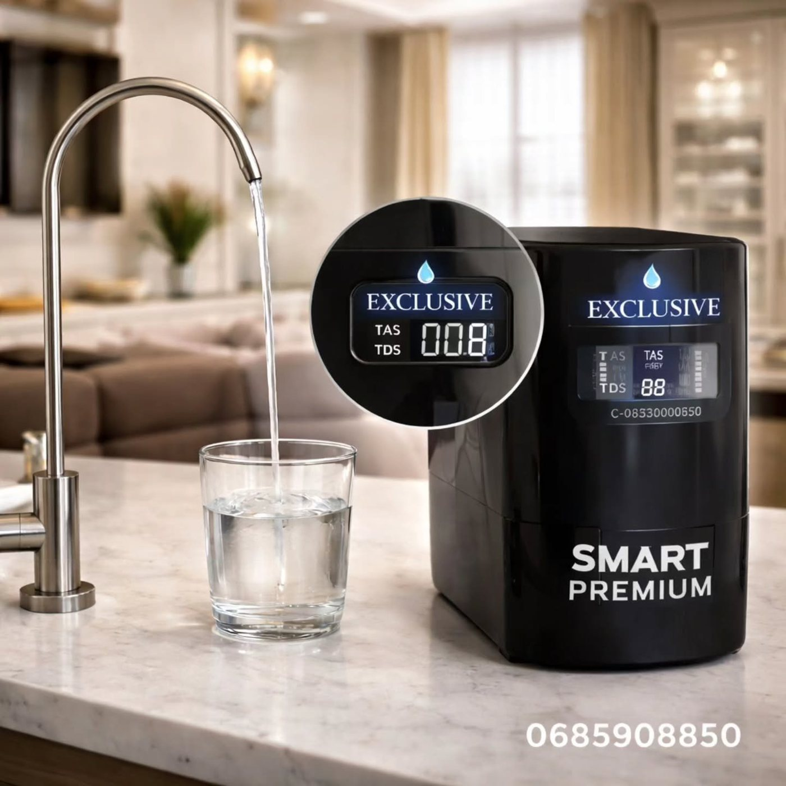

EKRAN DIGJITALOSMOZË E KUNDËRT · SMART
Exclusive Smart Premium
Sistem kompakt me osmozë të kundërt dhe ekran digjital që shfaq të dhëna si niveli TDS dhe gjendja e filtrave. Dizajni modern përshtatet në kuzhinë, ndërsa konfigurimi dhe mënyra e montimit përcaktohen sipas hapësirës dhe modelit.
Pyet për Smart Premium ↗︎